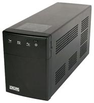
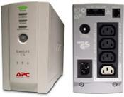

Источники Бесперебойного Питания. Четко о главном.

В связи с тем, что компьютеры
cooler.by используются по всему миру, они требуют и надлежащих условий в работе. Наличие сухости, холода, вентиляции и прочих положительных
факторов. К положительным факторам относятся еще и электрические условия, в которых работает этот компьютер. Но бывает так, что эти условия контролировать
невозможно. Если температуру в помещении, где стоит компьютер можно регулировать, повышать, понижать, контролировать уровень влажности, то электричество
контролировать сложнее. Бывает так, что питание припадает, на 1-2 минуты, или просадка напряжения, или наоборот, сверх высокий импульс и вся техника просто
выгорает из – за этого. В таких ситуациях спасает именно ИБП. Источник Бесперебойного Питания.
Они используются практически везде, и уже не секрет что и в домашних условиях ИБП завоевал уважение пользователей. Ведь это так удобно, не переживать что
с компьютером что то случится, когда вас не будет рядом или вы станете жертвой случайности. Скажем так, приобретая ИБП, вы становитесь фактически автономным
пользователем ПК. Что весьма и весьма безопасно.
Что стоит купить ? дорогой и дешевый ИБП ?
Дело не только в бренде и в переплате за торговую марку. Да, есть фирмы не из дешевых, но приобретя их продукцию вы поймете о каком качестве я говорю. Это
и тех поддержка онлайн и по телефону, 3-х летние гарантии на продукцию и высочайшее качество, в котором никто не усомнится.
А вы не задумывались, что может быть такого в ИБП за 40 долларов, и на что он способен. Какая начинка у этого устройства за такие деньги. Если вы его
получаете за 40 долларов, а производитель делает его, скажем за 20. То о наличии каких качественных деталей может быть речь?
Вдумайтесь. Не стоит доверять свой персональный компьютер, стоимостью
1000-2000 долларов, источнику бесперебойного питания за 40 долларов.
Итак, давайте поговорим о случайной модели ИБП. Скажем , APC Back-UPS
CS 500 BK500-RS . Ну , все вы знаете что покупая ИБП с 500 ВольтАмпер,
вы получаете 300 ВАТ , примерно. Хотя все мы знаем с курса физики, что
Мощность=Ампер*Вольт. Но в ИБП это не так. Это связано с низким КПД,
порядка 60%. Ну, такова технология на сегодняшний день. Иными словами
300 ват для офисного ПК это даже с запасом . Вы спокойно сможете
завершить все свои задачи, работу и даже послушать одну песенку перед
выключением.

И что ? Я рекомендую брать ИБП с 1500 вольт ампер ? Что бы сидеть без электричества часами ? Нет, я не пытаюсь уговорить вас приобрести ИБП за высокую цену.
Я говорю о том, что не все компьютеры офисные. Многие работают с графикой, видеомонтажом, играют в игры, развлекаются. И энергопотребление таких компьютеров
выходит за пределы в 300 Ват.
Но, если вы обратите внимание на тот факт, что чем больше компьютер потребляет мощности, тем меньше его время автономной работы от аккумулятора ИБП, то вы
поймете, что выбор ИБП для компьютера это не шутки.
Скажем , у вас ИБП с 500 вольтампер, и вы только работаете в офисном документе + слушаете музыку. Тогда ваш ПК потребляет около 100 Ват, а ваш ИБП рассчитан
на 300 ват пиковой мощности. И вы получаете больше времени на работу, за счет не интенсивного использования аккумулятора. Но, если вы задействуете все
ресурсы своего компьютера и энергопотребление повысится до 250-280 Ват в час, а вы помните что ваш ИБП рассчитан только на 300 Ват, то ваше время работы на
аккумуляторе будет намного меньше в сравнении со 100 ватной работой в документе. Но и это еще не все.
Представим , что у вас БП(Блок Питания) на 500 Ват. А ИБП на 300 Ват, ну те же 500 вольт ампер. И если вы захотите нагрузить свой компьютер на 300-350 или
400 ват, то вы не сможете. Если вы, преодолеете лимит в 300 ват то компьютер, уйдет в защиту, перезагрузившись.
Почему ? Потому что, независимо от мощности Блока Питания, вы будете ограничены лимитом вашего ИБП. Иными словами, если вы купите игровой компьютер с ИБП на
500 вольтаампер (300 ват), то ваш компьютер не сможет преодолеть этот барьер в 300 ват. Это означает что все что вы купили будет просто простаивать и не
работать на 100%, не оправдывая вложенные деньги.
Поэтому, покупайте ИБП качественные, они будут служить вам долго, вы будете только батареи менять, и то раз в 3-5 лет. Зато ваш ПК, сколько бы он ни стоил,
будет защищен на 100%. Ну, я надеюсь, я хоть как то помог вам сориентироваться в этих приборах. Если вы не верите мне, а верите продавцу или друзьям, то
попробуйте те варианты, что я привел в статье. Удачи в создании безопасного и надежного инструмента для работы.
Читайте также:
Из чего же состоит наш компьютер?
Компьютерный корпус весом в 13 кг.
Следующая статья:
AMD или INTEL ?